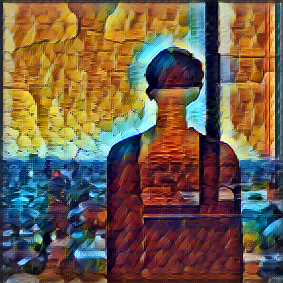
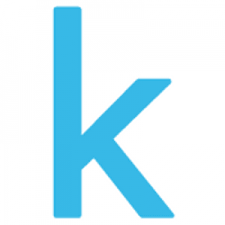
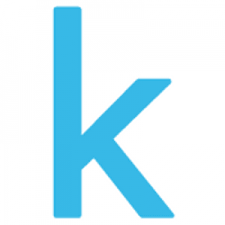

Ziwei Zhang
Master at University of Sydney
CV Amateur
Kaggle Contest Active
|
Education
- University of Sydney
2017.3 ~ 2019.5
Master of Information Technology and Information Management (Master)
Algorithm；Capstone Project；Machine Learning；Deep Learning；Advanced
Network Technology;
Advanced Machine Learning; Cloud Computing
- South China Agricultural University
2012.9 ~ 2016.6
Electronic Information (Bachelor)
Linear Algebra；Digital Signal Processing；Digital Electronic
Technique；Embedded Linux System
Skills
-
Python Coding training through LeetCode and TensorFlow
project
-
Machine Learning fostering by reading papers and doing
Kaggle Program.
-
Deep Learning knowledge about the CNN and RNN theories
and structures. Experience in Deep Learning Project
-
Computer Vision fostering by Fine Grained Visual
Categorization project. Knowledge about the recently popular network as
VGG16, InceptionV3 and DenseNet
-
Algorithm training via LeetCode weekly Contest as well
as Problem Solving
-
Spark Experienced in handling large data as well as the
framework about spark and MapReduce.
Project Experience
-
Kaggle: Understanding Clouds from Satellite Images (Silver Medal🥈
65/1538) (2019.10 ~ 2019.11)
-
DataCastle: AI in RTC super resolution quailty contest (24/479) (2019.08
~ Now)
-
Kaggle: Northeastern SMILE Lab - Recognizing Faces in the Wild (34/530)
(2019.07 ~ 2019.08)
-
Utilizing Pretrained Model for Fine-Grained Species Classification
(2018.3 ~ 2018.6)
- Kaggle: What's Cooking (7/523) (2018.6 ~ 2018.9)
- Kaggle: Forest Types(3/359) (2018.6 ~ 2018.9)
-
Costa Rican Household Poverty Level Prediction(42/619) (2018.6 ~ 2018.9)
- DataCastle: Gamer Money-Spending Prediction (2017.12 ~ 2018.1)
-
DataCastel: Beijing PM2.5 Regression Competition (2018.1 ~ 2018.2)
Email
zhangzw14@outlook.com
Also, you can find me from
 

[CV]